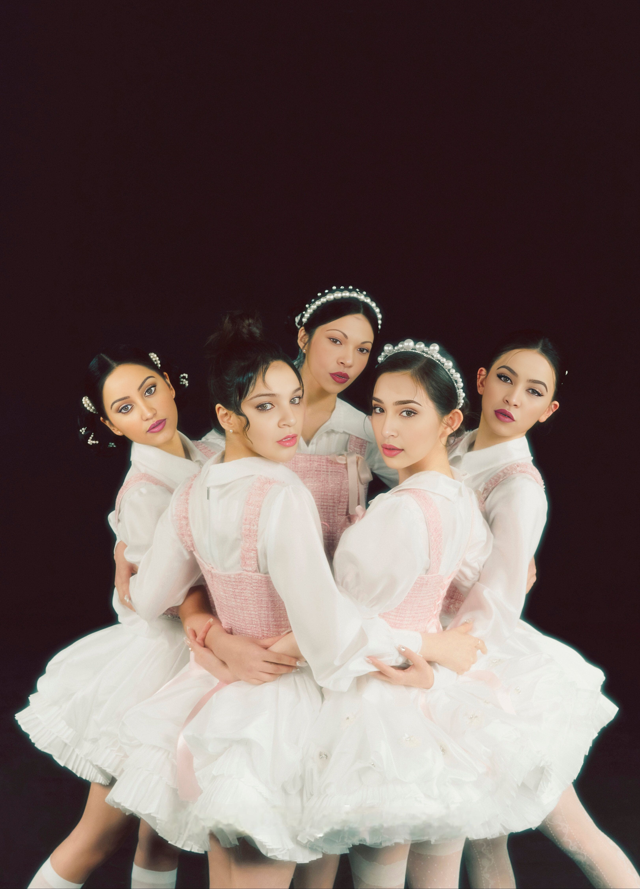
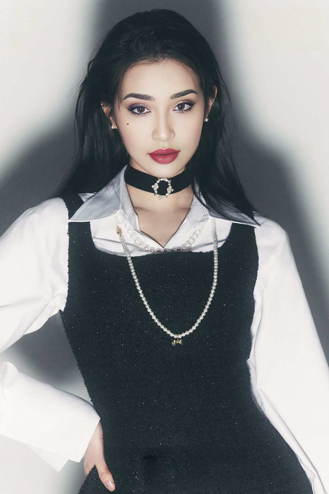

Lead story
NewMFX confirma comeback de Saori Kido com 2º álbum para o segundo trimestre de 2026.
A artista prepara o primeiro grande retorno após a fase de hiato, reacendendo a expectativa de uma nova era de estúdio.
Leia a matériaNewsroom
Atualizações oficiais, rumores e insights criativos no universo de Saori Kido.
Lead story
A artista prepara o primeiro grande retorno após a fase de hiato, reacendendo a expectativa de uma nova era de estúdio.
Leia a matériaMais materias
Record label
O anúncio preparou o terreno para a próxima fase da artista e ampliou as conversas entre fãs.
Leia mais
Festival era
As fases do projeto consolidaram um ecossistema mais ambicioso entre música, imagem e fandom.
Ler matéria
Visual watch
Entre styling, cabelo e direção visual, a narrativa recente sugere uma artista em reconstrução total.
Explorar